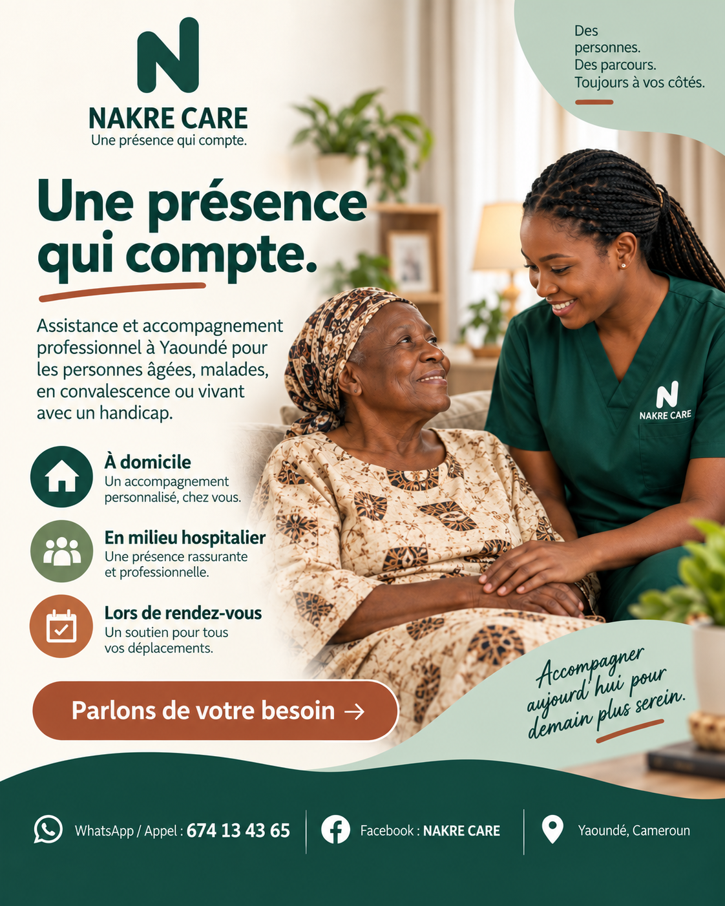
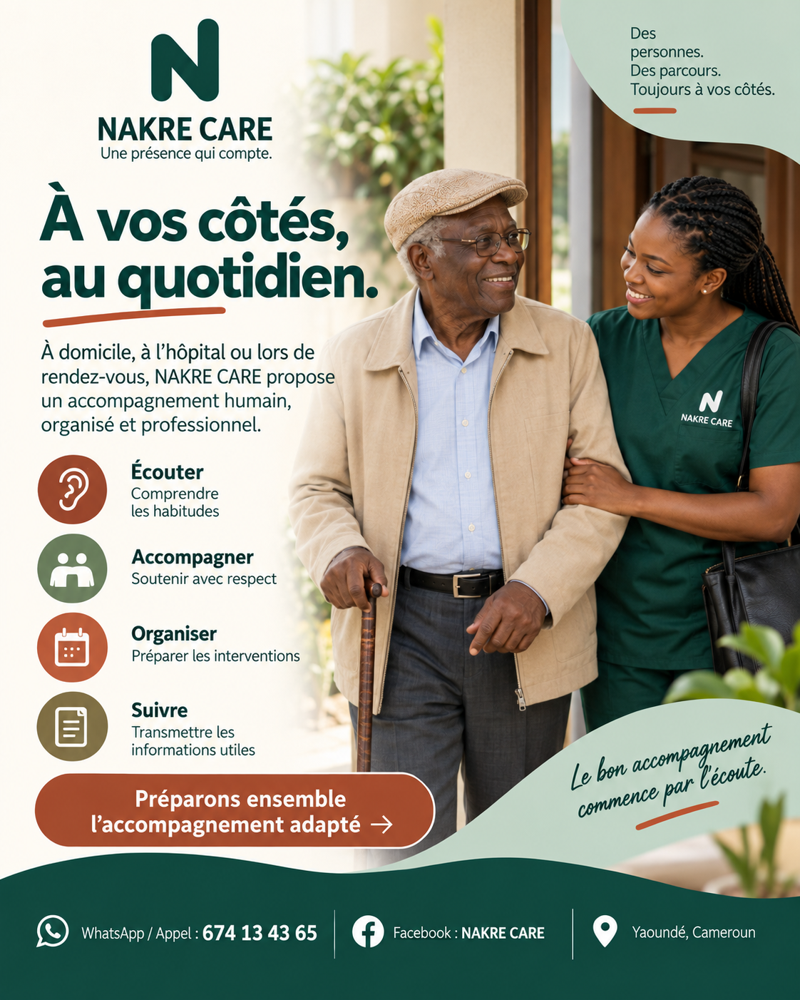
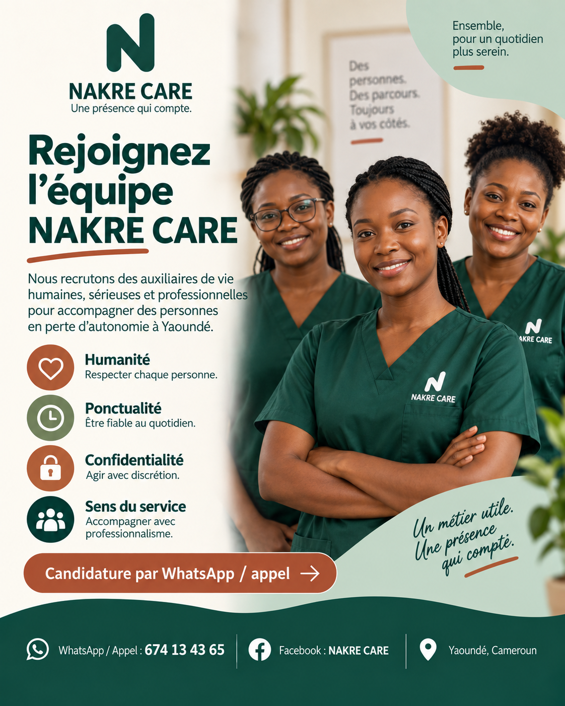

Dignité et bienveillance
Chaque intervention respecte la personne, ses habitudes et son rythme.
NAKRE Care propose un accompagnement humain, organisé et professionnel pour les personnes âgées, malades, en convalescence ou vivant avec un handicap. Nous intervenons à domicile, en milieu hospitalier et lors de rendez-vous.

Des personnes soutenues. Des familles sereines. Une organisation claire dès le premier contact.
Notre mission est d'apporter une présence professionnelle et bienveillante là où elle compte le plus : auprès des personnes fragilisées et des familles qui souhaitent un accompagnement clair, digne et fiable.
Chaque intervention respecte la personne, ses habitudes et son rythme.
Le cadre d'intervention s'adapte au besoin réel et au contexte familial.
À domicile, à l'hôpital ou pendant les déplacements utiles.
Un point de contact unique pour organiser et ajuster le suivi.

Les visuels ci-dessous présentent les principaux contextes d'accompagnement de NAKRE Care. Ils sont intégrés directement dans le site pour renforcer la confiance et limiter les espaces vides.
Présence à domicile, en milieu hospitalier ou lors de rendez-vous selon le besoin.
Écouter, accompagner, organiser et suivre : les quatre piliers de notre méthode.

Nous recrutons des auxiliaires de vie humaines, sérieuses et professionnelles à Yaoundé.
Nous avons simplifié l'expérience pour que chaque famille puisse comprendre rapidement comment se met en place l'accompagnement.
Vous nous écrivez sur WhatsApp ou vous appelez pour exposer le besoin.
Nous précisons le contexte, la fréquence, le lieu et le type d'assistance attendu.
Nous préparons l'accompagnement adapté avec une information claire pour la famille.
Nous restons disponibles pour ajuster l'intervention et transmettre les informations utiles.
Nous recherchons des profils engagés, ponctuels et respectueux, capables d'accompagner avec professionnalisme les personnes en perte d'autonomie à Yaoundé.
Cette galerie reprend les principaux visuels que vous avez fournis, afin que le site reflète directement l'univers de votre page Facebook.
Le plus simple est de nous écrire sur WhatsApp. Vous pouvez aussi utiliser le formulaire ci-contre : il prépare automatiquement le message à envoyer.
Aux personnes âgées, malades, en convalescence ou vivant avec un handicap, ainsi qu'aux familles qui recherchent un accompagnement structuré.
À domicile, en milieu hospitalier et lors de rendez-vous ou déplacements utiles, selon l'organisation définie avec la famille.
Écrivez simplement sur WhatsApp au 674 134 365 pour présenter brièvement votre situation.
Besoin d'aide, d'information ou envie de rejoindre l'équipe ? Écrivez-nous sur WhatsApp et nous reviendrons vers vous rapidement.